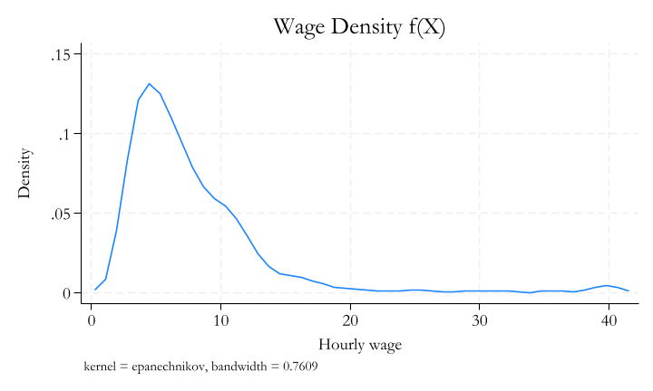

A random variable is a variable whose value is determined by the outcome of a random experiment.
For example, if we toss a coin, the outcome is random, but the possible values of \(X\) are 0 and 1.
If we roll a die, the outcome is random with possible values 1, 2, 3, 4, 5, and 6.
Exact temperature in a room
There are two kinds of random variables:
Discrete random variables can only take on a finite number of values. For example, the number of heads in 10 coin tosses is a discrete random variable.
The probability of observing a particular value is not always zero
Continuous random variables can take on any value in a range. For example, the height of a randomly selected person is a continuous random variable.
If \(X\) is discrete random variable, then \(P(X=c)\) is the probability that \(X\) takes on the value \(c\). It can be any value between 0 and 1. ()
By definition, the sum of all probabilities for all feasible values of \(X\) is 1. That is, \(\sum_{c} P(X=c)=1\).
If \(X\) is continuous random variable, then \(P(X=c)=0\) for any value \(c\).
The probability to observe a particular number is zero.
Instead, when using continuous data, we focus on the probability of observing a value in a range. For example, \(P(1.7 \leq X \leq 1.8)\) is the probability that \(X\) is between 1.7 and 1.8, which can be any value between 0 and 1.
Stata and Random Variables
Computers CANNOT generate random numbers. They can only generate pseudo-random numbers.
Random numbers cannot be reproduced.
Pseudo-random numbers can be reproduced, if we know initial conditions. (seed)
For most purposes, pseudo-random numbers are good enough.
Stata has many built-in function to generate random numbers.
help random for more information.
Probability Distributions
A probability distribution is a function that assigns probabilities to the values of a random variable.
For discrete random variables, we can use a table to describe the probability distribution. For example, the probability distribution of the number of heads in 5 coin tosses is:
Number of heads
Probability
0
0.03125
1
0.15625
2
0.3125
3
0.3125
4
0.15625
5
0.03125
In this case, the sum of all probabilities is 1.
Probability Density Functions
For continuous random variables, we can use a function to describe the probability distribution.
For example, we can say that the probability distribution of the height of a randomly selected person is:
kdensity wage, scale(1.25) title("Wage Density f(X)")

Joint Probability Distributions
The joint probability distribution of \(X\) and \(Y\) is a function that assigns probabilities to the values of \(X\) and \(Y\).
For discrete random variables, we can use a table to describe the joint probability distribution.
Code
tab race married, cell nofreq
| Married
Race | Single Married | Total
-----------+----------------------+----------
White | 21.68 51.20 | 72.89
Black | 13.76 12.20 | 25.96
Other | 0.36 0.80 | 1.16
-----------+----------------------+----------
Total | 35.80 64.20 | 100.00
It must be the case that the sum of all probabilities is 1.
For continuous variables, estimation and graphical representation is tricky
it must be the case that:
\[\int_{-\infty}^{\infty} \int_{-\infty}^{\infty} f(x,y) dx dy = 1\]
You may be able to use scatter plots, or contour plots, to represent the joint probability distribution of two continuous random variables.
The conditional probability of \(X\) given \(Y\) is:
\[P(x|y) = \frac{P(x,y)}{P(y)}\]
or, the conditional probabilty density function:
\[f(x|y) = \frac{f(x,y)}{f(y)}\]
And if \(X\) and \(Y\) are independent, then:
\(P(x|y) = P(x)\) or \(f(x|y) = f(x)\).
Marginal Probability Distributions
The marginal probability distribution of \(X\) is the probability distribution of \(X\) ignoring/regardless the values of \(Y\). This can be expressed as:
Two random variables \(X\) and \(Y\) are independent if and only if:
\[P(x,y) = P(x)P(y) \text{ or } f(x,y)=f(x)*f(y)\]
That means the conditional probability of \(X\) given \(Y\) is the same as the marginal probability of \(X\).
\(P(x|y) = P(x)\) or \(f(x|y) = f(x)\).
Summary Statistics
Given a random variable \(X\), there are several summary statistics that can be used to describe the distribution of \(X\), without describing the entire distribution
Central Tendency
Mean: average value of \(X\).
\[\bar x = E(X) = \sum_{x} xP(X=x) \text{ or } E(X) = \int_{-\infty}^{\infty} xf(x)dx\]
Median: middle value of \(X\).
Percentile: values that identify the boundaries of the distribuion. Median is the 50th percentile.
\[Q_y(p) = E(Y \leq Q_y) = p\]
Mode: most frequent value of \(X\).
sum var,d in Stata will give you the mean, median, and selected quantiles.
mode can be estimated using egen, or based on empirical distribution.
Dispersion
Variance: Average squared deviation from the mean.